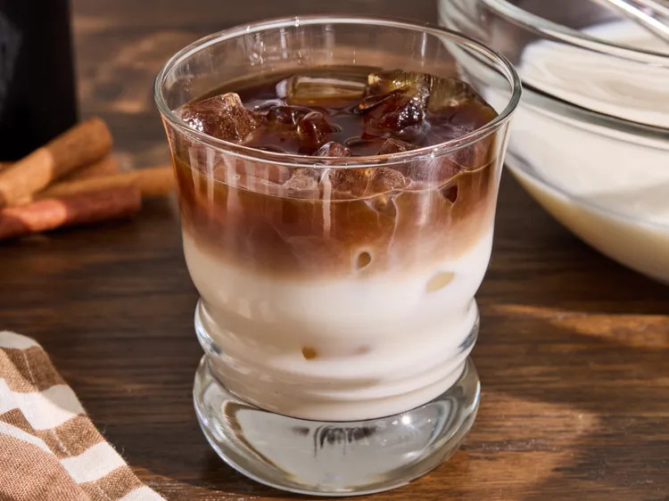

For horchata, combine rice, cinnamon sticks, and water in a container and let stand for 2 hours.
Drain rice and cinnamon sticks, but save the water. Combine rice and cinnamon sticks in a food processor or powerful blender. Process or blend until mixture resembles coarse sand.
Place rice mixture back into soaking water and let sit for 2 hours, stirring occasionally.
Strain rice mixture through a fine sieve into a container. Add sweetened condensed milk, milk, and vanilla extract. Stir until well combined and refrigerate horchata until ready to use.
For each dirty horchata, fill a glass with ice cubes and pour 1/2 cup (or as needed) horchata into the glass. Top with espresso; add cold brew coffee to taste.